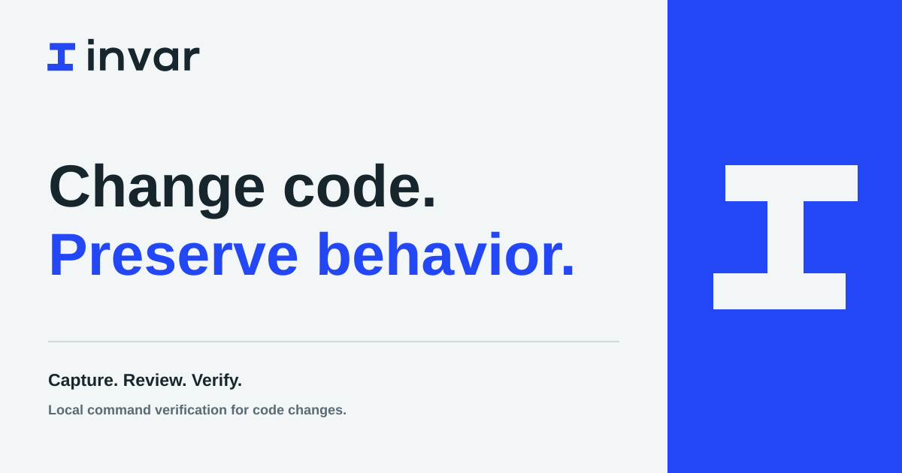

Invar brand kit
Change code.
Preserve behavior.
A clear identity for a precise tool. Invar captures command behavior, keeps approval explicit, and compares later runs with accepted examples.
Read the brand guidelinesBuilt around
what stays.
Two displaced caps. One fixed spine. The mark is a custom I: a small expression of code changing around the behavior you chose to preserve.
A reference point, not a security seal. The identity never promises complete coverage or guaranteed correctness.
Illustrative movement study. Downloads retain the fixed export geometry.
One mark. Every setting.
Path-based SVGs. Transparent backgrounds.
No font dependency in the logos.


Minimum recommended width: 144 px for the lockup, 16 px for the mark. Keep the proportions. Use the reversed version on dark grounds.
Signal, with restraint.
Blue carries the identity.
Neutrals give the work room.
#2347F5#17262C#F3F6F7#586A74#CFD8DCUse Graphite for primary text, Steel for secondary text, and Blue for emphasis. Line is a decorative separator, never the sole boundary of an interactive control.
Design tokens CSS variablesClear at every scale.
Barlow brings a direct, engineered rhythm without turning the whole identity into terminal output.
Regular 400 for reading. Bold 700 for hierarchy. System monospace for code and literal values.
Font licenseMake changes.
Keep your bearings.
Capture command results. Review the candidate. Approve it explicitly. Compare later runs with the accepted behavior.
invar verify --jsonCODE / SYSTEM MONOSPACESound like the tool.
Precise. Direct. Accountable.
Name the observation. State the limit. Give the next action. Confidence comes from evidence, not absolutes.
Say what was checked.
“All configured examples match accepted behavior.”
Avoid: “Your code cannot break.”
Describe the difference.
“stdout changed. Review the first differing byte.”
Avoid: “The AI made your app unsafe.”
Keep approval explicit.
“Review the candidate before locking it.”
Avoid: “Automatically trust the new baseline.”
Ready to put to work.
The same idea, from the smallest icon
to the next project update.

Keep the product honest.
The CLI stays readable in the user’s terminal. JSON stays plain. A passing check covers configured examples. The logo is an identity, not a guarantee.
Read about Invar